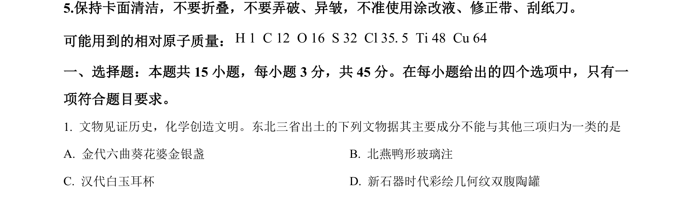
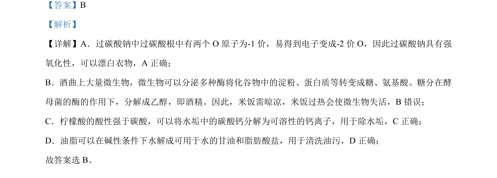

考点：氧化还原反应 酸性比较 油脂水解 微生物活性

本题考查化学与生活知识，涉及漂白、发酵、除垢、去油等原理的判断。

📄 原 PDF 第 3 页：
素材/真题/吉林/2008-2024·（吉林）化学高考真题/2024年高考化学试卷（辽宁）（解析卷）.pdf
【答案】B 【解析】 【详解】A．过碳酸钠中过碳酸根中有两个 O 原子为-1 价，易得到电子变成-2 价 O，因此过碳酸钠具有强 氧化性，可以漂白衣物，A 正确； B．酒曲上大量微生物，微生物可以分泌多种酶将化谷物中的淀粉、蛋白质等转变成糖、氨基酸。糖分在酵 母菌的酶的作用下，分解成乙醇，即酒精。因此，米饭需晾凉，米饭过热会使微生物失活，B错误； C．柠檬酸的酸性强于碳酸，可以将水垢中的碳酸钙分解为可溶性的钙离子，用于除水垢，C正确； D．油脂可以在碱性条件下水解成可用于水的甘油和脂肪酸盐，用于清洗油污，D 正确； 故答案选 B。